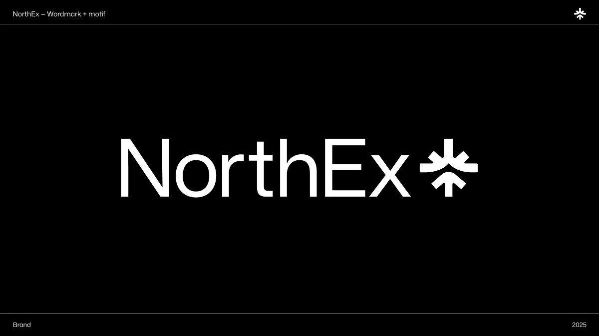
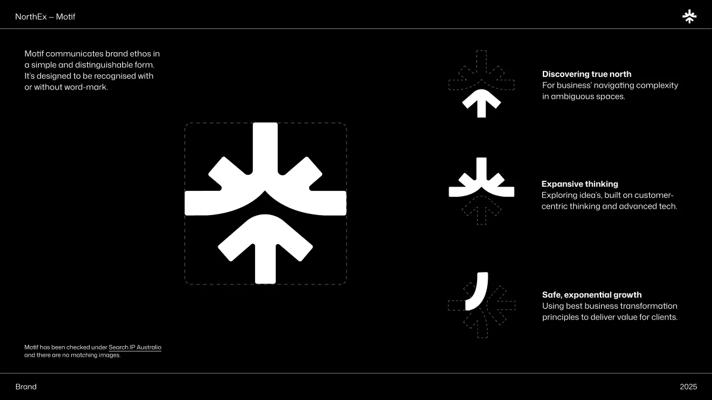
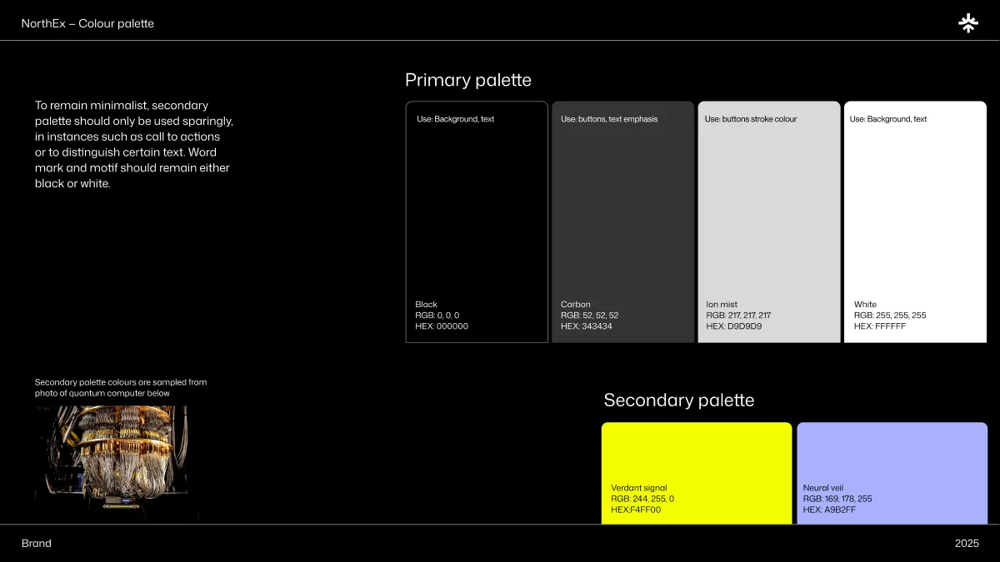
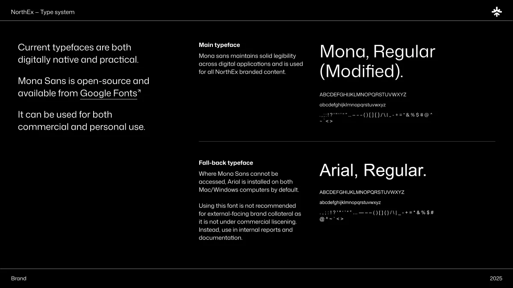
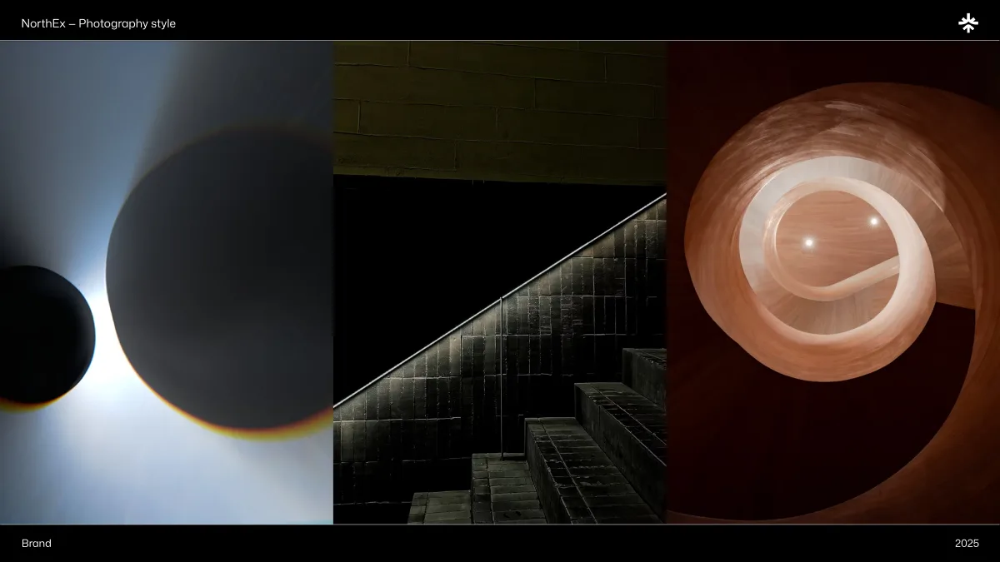
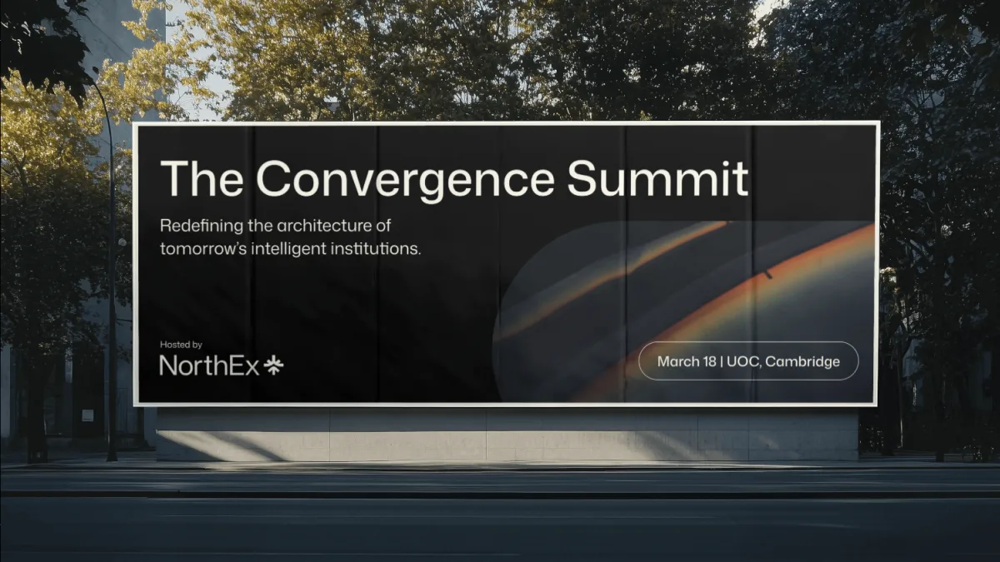

Case study · NorthEx, 2025
NorthEx brand identity
A digital-first visual identity for NorthEx, a business transformation company: motif, wordmark, colour, type and photography.
- The customer
- Businesses navigating complexity in ambiguous spaces
- Team
- Ro as brand designer
- Skills

The problem
NorthEx helps clients move with confidence into what’s next. It needed a visual identity built digital first, with guidelines firm enough to follow and flexible enough to grow with the business.
How Ro solved it
- 01Designed a motif that carries the brand’s ethos in one simple form, recognisable with or without the wordmark: discovering true north, expansive thinking, and safe, exponential growth.
- 02Checked the motif under Search IP Australia, with no matching images.
- 03Kept the palette minimal: black, carbon, ion mist and white, plus two secondary colours sampled from a photo of a quantum computer, used sparingly for calls to action.
- 04Chose Mona Sans, open source and digitally native, with Arial as the fallback for internal documents, and set a type scale for web-first use.
- 05Defined a photography style of dark-lit, abstract shapes in man-made and natural structures.
- 06Costed a future move to Neue Montreal, so NorthEx can upgrade its type when the time is right.
Outcome
A brand guidelines deck covering the motif, wordmark and clear space, colour, type and photography, shown applied to event billboards.
Inside the work




